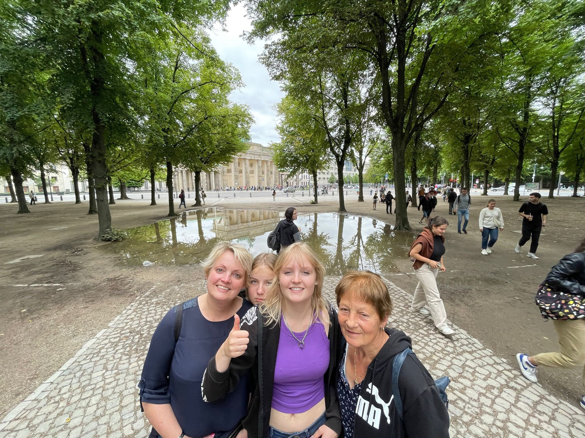
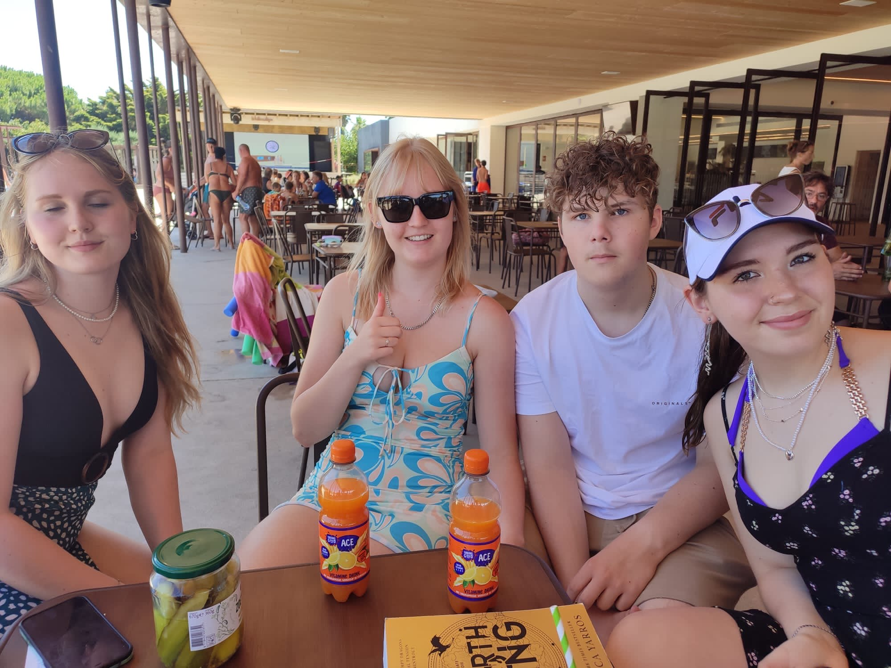
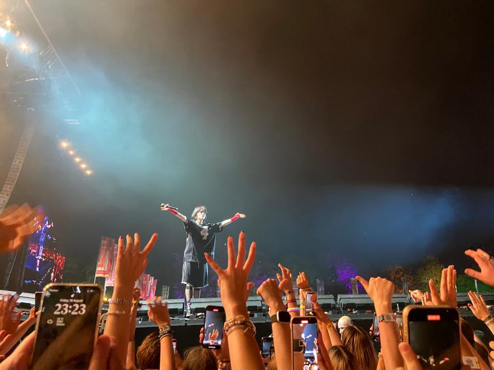

Ik ben Carice Brust, ik ben 15 jaar en ik studeer softare developer bij Alfa College in Groningen. Ik heb deze opleiding gekozen omdat het me erg intressant leek en heel uitdagend aangezien ik nog geen ervaring heb in dit vak.
Naast mijn school vind ik het erg leuk om te hockeyen, ik heb al eerder gehockeyd maar ik was gestopt. Nu heb ik het weer opgepakt en vind ik het erg leuk, ik speel op het moment nog geen wedstrijden doordat ik in de weekende werk bij Gosselaar. Ik vind dit werk erg leuk omdat ik veel contact hebt met klanten, ook is het werk erg gevarieerd en de collega's zijn erg gezellig.
Ik heb 3 huisdieren op het moment, 2 grasparkieten die Billie en Wicky heten en een konijn die Flappie heet. Helaas is een paar jaar geleden het konijn Hanna overleden.
Ik vind reizen erg leuk, ik ben deze zomer vakantie naar Berlijn geweest, met mijn vriend en zijn famillie naar Spanje, België en Parijs.


